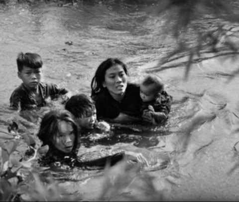

Trong khói lửa chiến tranh, có hình ảnh người mẹ ôm con chạy giữa bom đạn, đôi mắt thất thần nhưng vòng tay vẫn chở che. Có những mái nhà bị thiêu rụi, những ngôi làng hoang tàn, nhưng trên những đống tro tàn ấy, nhân dân vẫn kiên cường đứng dậy, tiếp tục sống, tiếp tục đấu tranh.
Chiến tranh không chỉ là trận mạc, là súng đạn, mà còn là nỗi đau và ý chí của những con người bình dị nhất — những người nông dân, thợ thuyền, cụ già, em nhỏ — những con người dù không cầm súng nhưng lại là hậu phương vững chắc, là sức mạnh để đất nước kiên cường đi qua bão lửa.


Triển lãm “Nhân dân trong khói lửa chiến tranh” là câu chuyện về họ — những con người bình dị nhưng vĩ đại, những chứng nhân của lịch sử, những người đã chịu đựng, hy sinh và chiến đấu vì nền độc lập, tự do. Mời quý vị cùng bước vào hành trình ký ức, để lắng nghe tiếng vọng từ quá khứ, để cảm nhận và tri ân.